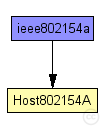
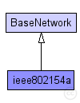

This documentation is released under the Creative Commons license
This documentation is released under the Creative Commons licenseThis example illustrates the use of the IEEE 802.15.4A UWB-IR simulation model implemented in MiXiM. The omnetpp.ini files comprises two scenarios. Both scenarios involve only two hosts.
The first scenario, named BERDistance, configures one host to sends ($nbPackets) packets to the other. The distance ($distance) between the two nodes is changed at each run. This is performed for two channel models (Ghassemzadeh-LOS and NLOS) so that the difference between a Line of Sight and a Non Line of Sight environment can be seen.
The second scenario is simpler. It only sends one packet at each time, and iterates over five channel models: Ghassemzadeh-LOS, Ghassemzadeh-NLOS, CM1, CM2 and CM5. It allows to see the simulator representation of the maximum pulse amplitude over time, as modified by the various channel models.
To run the scenarios, compile mixim, open a terminal and go to examples/ieee80154a. There, type: ./runBERDistance.sh to execute all runs of the Bit Error Rate over Distance scenario. The "run" script expects to find opp_run in the path. Thus, make sure to have $OMNET_PATH/bin in your path.
You can also try: ./runChannelPlots.sh to execute all runs of the channelPlots scenario.
The results can be analyzed from within Omnet++. In the examples/ieee802154a directory, open the files BERDistance.anf or channelPlots.anf (depending on the scenario that you ran before). At the bottom of the window, switch from the Inputs tab to the Datasets tab. In the BERDistance.anf file, you will find a "scatter chart BER_Distance" item. Double-click on it to generate the graph.
In the channelPlots.anf file, there are several graphs. Opening "line chart Ghassemzadeh LOS" will show the packet as modified by the Ghassemzadeh LOS channel model. Compare it with "line chart CM2" to see the impact of the Power Delay Profile. By default, the view does not allow to see the pulse shapes, because of the ultra short duration (2 ns per pulse). Zoom repeatedly until you see a triangular shape, by holding down the "Ctrl" touch and drawing a zoom box with the mouse around the area to enlarge.
For more information, please refer to: * the Omnet++ documentation at www.omnetpp.org/documentation and the user guide. * the MiXiM documentation * UWB-IR NED modules documentation and source code.
Questions should be send to the Omnet++ mailing-list: omnetpp@googlegroups.com.
acknowledgment
The following diagram shows usage relationships between types. Unresolved types are missing from the diagram. Click here to see the full picture.
The following diagram shows inheritance relationships for this type. Unresolved types are missing from the diagram. Click here to see the full picture.
| Name | Type | Description |
|---|---|---|
| BaseNetwork | network | (no description) |
| Name | Type | Default value | Description |
|---|---|---|---|
| playgroundSizeX | double |
x size of the area the nodes are in (in meters) |
|
| playgroundSizeY | double |
y size of the area the nodes are in (in meters) |
|
| playgroundSizeZ | double |
z size of the area the nodes are in (in meters) |
|
| cmType | string | "org.mixim.base.connectionManager.ConnectionManager" |
connection manager to use |
| wuType | string | "org.mixim.base.modules.BaseWorldUtility" |
world utility to use |
| numHosts | int |
total number of hosts in the network |
| Name | Value | Description |
|---|---|---|
| isNetwork | ||
| display | bgb=$playgroundSizeX,$playgroundSizeY,white;bgp=0,0 |
| Name | Type | Default value | Description |
|---|---|---|---|
| connectionManager.coreDebug | bool |
debug switch for core framework |
|
| connectionManager.sendDirect | bool |
send directly to the node or create separate gates for every connection |
|
| connectionManager.pMax | double |
maximum sending power used for this network [mW] |
|
| connectionManager.sat | double |
minimum signal attenuation threshold [dBm] |
|
| connectionManager.alpha | double |
minimum path loss coefficient |
|
| connectionManager.carrierFrequency | double |
minimum carrier frequency of the channel [Hz] |
|
| world.useTorus | bool |
use the playground as torus? |
|
| node.netwl.stats | bool |
stats switch |
|
| node.netwl.headerLength | int |
length of the network packet header (in bits) |
|
| node.tranl.stats | bool |
stats switch |
|
| node.tranl.headerLength | int |
length of the network packet header (in bits) |
|
| node.sessl.stats | bool |
stats switch |
|
| node.sessl.headerLength | int |
length of the network packet header (in bits) |
|
| node.presl.stats | bool |
stats switch |
|
| node.presl.headerLength | int |
length of the network packet header (in bits) |
|
| node.appl.headerLength | int |
length of the application message header (in bits) |
|
| node.batteryStats.notAffectedByHostState | bool | true | |
| node.batteryStats.debug | bool | false |
write per-activity and per-device statistics to omnetpp.sca (if false, only total energy and lifetime are written) |
| node.batteryStats.detail | bool | true |
subscribe to battery status and record time series data in omnetpp.vec (resolution depends on battery's publishDelta) |
| node.batteryStats.timeSeries | bool | false | |
| node.battery.debug | bool | false | |
| node.battery.nominal | double |
nominal battery capacity |
|
| node.battery.capacity | double |
battery capacity |
|
| node.battery.voltage | double |
nominal voltage |
|
| node.battery.resolution | double |
capacity is updated at least every resolution time |
|
| node.battery.publishDelta | double |
if > 0, capacity is published to the BB each publishTime interval |
|
| node.battery.publishTime | double |
number of modules that will draw energy from the battery |
|
| node.battery.numDevices | int |
// //This example illustrates the use of the IEEE 802.15.4A UWB-IR //simulation model implemented in MiXiM. //The omnetpp.ini files comprises two scenarios. Both scenarios //involve only two hosts. // //The first scenario, named BERDistance, configures one host to //sends ($nbPackets) packets to the other. The distance ($distance) //between the two nodes is changed at each run. This is performed //for two channel models (Ghassemzadeh-LOS and NLOS) so that the //difference between a Line of Sight and a Non Line of Sight //environment can be seen. // //The second scenario is simpler. It only sends one packet at each //time, and iterates over five channel models: Ghassemzadeh-LOS, //Ghassemzadeh-NLOS, CM1, CM2 and CM5. //It allows to see the simulator representation of the maximum //pulse amplitude over time, as modified by the various channel //models. // //To run the scenarios, compile mixim, open a terminal and go to //examples/ieee80154a. There, type: //./runBERDistance.sh //to execute all runs of the Bit Error Rate over Distance scenario. //The "run" script expects to find opp_run in the path. Thus, make sure //to have $OMNET_PATH/bin in your path. // //You can also try: //./runChannelPlots.sh //to execute all runs of the channelPlots scenario. // //The results can be analyzed from within Omnet++. In the //examples/ieee802154a directory, open the files BERDistance.anf //or channelPlots.anf (depending on the scenario that you ran before). //At the bottom of the window, switch from the Inputs tab to the Datasets //tab. In the BERDistance.anf file, you will find a "scatter chart BER_Distance" //item. Double-click on it to generate the graph. // //In the channelPlots.anf file, there are several graphs. Opening //"line chart Ghassemzadeh LOS" will show the packet as modified by the //Ghassemzadeh LOS channel model. Compare it with "line chart CM2" to see //the impact of the Power Delay Profile. By default, the view does not allow //to see the pulse shapes, because of the ultra short duration (2 ns per pulse). //Zoom repeatedly until you see a triangular shape, by holding down the "Ctrl" //touch and drawing a zoom box with the mouse around the area to enlarge. // //For more information, please refer to: //* the Omnet++ documentation at www.omnetpp.org/documentation and the user guide. //* the MiXiM documentation //* UWB-IR NED modules documentation and source code. // //Questions should be send to the Omnet++ mailing-list: omnetpp@googlegroups.com. // //acknowledgment //-------------- //this work was supported (in part) by the National Competence //Center in Research on Mobile Information and Communication Systems //NCCR-MICS, a center supported by the Swiss National Science //Foundation under grant number 5005-67322. // network ieee802154a extends BaseNetwork { parameters: int numHosts; // total number of hosts in the network submodules: node[numHosts]: Host802154A { parameters: numHosts = numHosts; @display("p=50,50;i=device/wifilaptop;is=vs"); } }
This documentation is released under the Creative Commons license